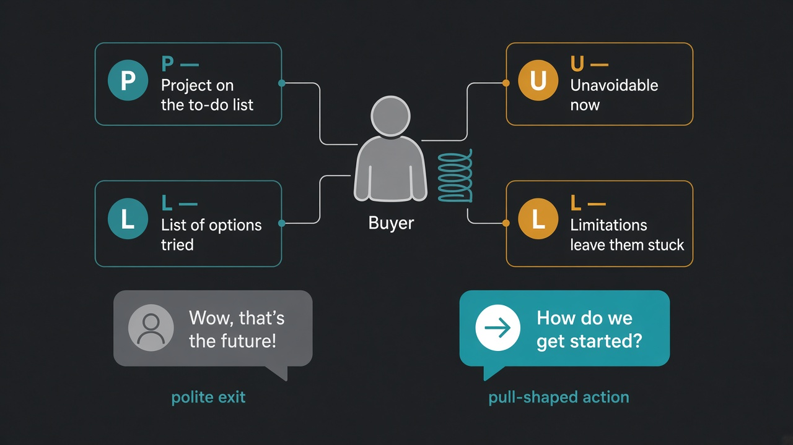

A real pain point isn't demand: check for pull (Project, Unavoidable, List, Limitations)
Source: Rob Snyder (@RobSnyder1), author of The Power of Pull, via Lenny Rachitsky (@lennysan)
takeaways post · episode post · design partners clip
What it claims
Solving a pain point isn't enough to get people to buy. Snyder's first startup had a hair-on-fire problem, a differentiated solution and design partners using it daily, and still spent two years pivoting: every prospect agreed it solved real problems, none bought. His PULL test names four conditions behind a buying decision: the buyer has a Project on their to-do list, a reason it's Unavoidable right now, a List of options they've already considered, and Limitations in each that leave them stuck. That person is a "coiled spring". Pull belongs to a specific person, not a company: not "we sell to SpaceX" but "the head of legal with a project she can't get done herself". The signal in a meeting is a pull-shaped action ("Wait, you can do that? How do we get started?"), not enthusiasm; "totally the future of our industry" is a polite exit. He also calls design partners a trap: people with real pull just want it done, so offering a partnership attracts the people who don't have it, and their feedback is "them playing Steve Jobs".
Why it matters for a PO
POs collect pain all the time: interviews, support tickets, stakeholder wish lists. Pain explains why something hurts; it doesn't tell you whether anyone will change what they do now. The PULL questions turn a vague "customers want X" into checkable facts about one named person: is it on their list, why now, what have they tried, and why did those fall short. That's a sharper filter for backlog items and pilots than counting how many people nodded. It complements the forces-of-progress lesson (227), which explains switching; PULL is the quick test of whether a specific buyer is ready to switch now.
3 takeaways
- Pain is not demand. Look for a project already on someone's to-do list that has become unavoidable now.
- Ask what they've already tried and why it fell short. A list of failed options is evidence of pull; "we'd love that someday" is not.
- Judge the meeting by the next step they ask for, not by their praise. "How do we start?" counts; "that's the future" is a polite exit.
Practice this week
Pick the top three customer requests behind your next roadmap item. For each, name one specific person (a role at a named customer, not the company) and fill in four lines: Project (what's on their list), Unavoidable (why now), List (what they've tried), Limitations (why those didn't work). Leave a line blank if you don't know it. Any request with two or more blanks goes back to discovery before it gets a Sprint. In your next customer conversation, open with "Why did you take this call?" and note whether they ask how to get started.